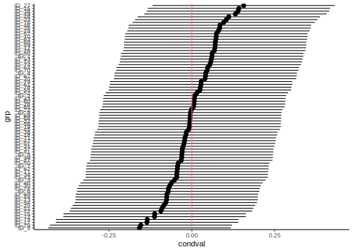

5.2 Practical
5.2.1 Overview
This practical is intended to get you started fitting some simple mixed models with so called random intercepts. The tutorial is derived from one that accompanied the paper (Houslay and Wilson 2017), “Avoiding the misuse of BLUP in behavioral ecology”. Here, you will be working through a simplified version in which I have taken more time to cover the basic mixed models and don’t cover multivariate models which were really the main point of that paper. So if you find this material interesting don’t worry we will go through a more advanced version of the original paper on multivariate models in chapter XX. The original version will be worth a work through to help you break into multivariate mixed models anyway! Here we will:
- Learn how to fit - and interpret the results of - a simple univariate mixed effect model
- See how to add fixed and random effects to your model, and to test their significance in the normal frequentists sense
We are going to use the 📦 lme4 (Bates et al. 2021) which is widely used and great for simple mixed models. However, since, for philosophical reasons, lme4 does not provide any p-values for either fixed or random effects, we are going to use the 📦 lmerTest (Kuznetsova et al. 2020), which add a bunch a nice goodies to lme4 For slightly more complex models, including multivariate ones, generalised models, and random effects of things like shared space, pedigree, phylogeny I tend to use different 📦 like MCMCglmm (Hadfield 2010) (which is Bayesian, look at Jarrod Hadfield’s excellent course notes (Hadfield 2022)) or ASReml-R (Butler 2021) (which is likelihood based/frequentist but sadly is not free).
5.2.2 R packages needed
First we load required libraries
library(lmerTest)
library(tidyverse)
library(rptR)5.2.3 The superb wild unicorns of the Scottish Highlands
Unicorns, a legendary animal and also symbol or Scotland, are frequently described as extremely wild woodland creature but also a symbol of purity and grace. Here is one of most accurate representation of the lengendary animal.

Figure 5.1: The superb unicorn of the Scottish Highlands
Despite their image of purity and grace, unicorns (Unicornus legendaricus) are raging fighter when it comes to compete for the best sweets you can find at the bottom of rainbows (unicorn favourite source of food).
We want to know:
- If aggressiveness differs among individuals
- If aggressive behaviour is plastic (change with the environment)
- If aggressive behaviour depends on body condition of focal animal
With respect to plasticity, we will focus on rival size as an ‘environment’. Common sense, and animal-contest theory, suggest a small animal would be wise not to escalate an aggressive contest against a larger, stronger rival. However, there are reports in the legendary beasty literature that they get more aggressive as rival size increases. Those reports are based on small sample sizes and uncontrolled field observations by foreigners Munro baggers enjoying their whisky after a long day in the hills.
5.2.3.1 Experimental design
Here, we have measured aggression in a population of wild unicorns. We brought some (n=80) individual into the lab, tagged them so they were individually identifiable, then repeatedly observed their aggression when presented with model ‘intruders’ (animal care committe approved). There were three models; one of average unicorn (calculated as the population mean body length), one that was build to be 1 standard deviation below the population mean, and one that was 1 standard deviation above.
Data were collected on all individuals in two block of lab work. Within each block, each animal was tested 3 times, once against an ‘intruder’ of each size. The test order in which each animal experienced the three instruder sizes was randomised in each block. The body size of all focal individuals was measured at the beginning of each block so we know that too (and have two separate measures per individual).
5.2.3.2 looking at the data
Let’s load the data file unicorns_aggression.csv in a R object named unicorns and make sure we understand what it contains
unicorns <- read.csv("data/unicorns_aggression.csv")You can use summary(unicorns) to get an overview of the data and/or str(unicorns) to see the structure in the first few lines. This data frame has 6 variables:
str(unicorns)## 'data.frame': 480 obs. of 6 variables:
## $ ID : chr "ID_1" "ID_1" "ID_1" "ID_1" ...
## $ block : num -0.5 -0.5 -0.5 0.5 0.5 0.5 -0.5 -0.5 -0.5 0.5 ...
## $ assay_rep : int 1 2 3 1 2 3 1 2 3 1 ...
## $ opp_size : int -1 1 0 0 1 -1 1 -1 0 1 ...
## $ aggression: num 7.02 10.67 10.22 8.95 10.51 ...
## $ body_size : num 206 206 206 207 207 ...summary(unicorns)## ID block assay_rep
## Length:480 Min. :-0.5 Min. :1
## Class :character 1st Qu.:-0.5 1st Qu.:1
## Mode :character Median : 0.0 Median :2
## Mean : 0.0 Mean :2
## 3rd Qu.: 0.5 3rd Qu.:3
## Max. : 0.5 Max. :3
## opp_size aggression body_size
## Min. :-1 Min. : 5.900 Min. :192.0
## 1st Qu.:-1 1st Qu.: 8.158 1st Qu.:229.7
## Median : 0 Median : 8.950 Median :250.0
## Mean : 0 Mean : 9.002 Mean :252.5
## 3rd Qu.: 1 3rd Qu.: 9.822 3rd Qu.:272.0
## Max. : 1 Max. :12.170 Max. :345.2So the different columns in the data set are:
- Individual ID
- Experimental Block, denoted for now as a continuous variable with possible values of -0.5 (first block) or +0.5 (second block)
- Individual body_size, as measured at the start of each block in kg
- The repeat number for each behavioural test, assay_rep
- Opponent size (opp_size), in standard deviations from the mean (i.e., -1,0,1)
- aggression, our behavioural trait, measured 6 times in total per individual (2 blocks of 3 tests)
maybe add something on how to look at data structure closely using tables
5.2.4 Do unicorns differ in aggressiveness? Your first mixed model
Fit a first mixed model with lmer that have only individual identity as a random effect and only a population mean.
Why, so simple? Because we simply want to partition variance around the mean into a component that among-individual variance and one that is within-individual variance.
A sensible researcher would probably take the time to do some exploratory data plots here. So let’s write a mixed model. This one is going to have no fixed effects except the mean, and just one random effect - individual identity.
m_1 <- lmer(aggression ~ 1 + (1 | ID), data = unicorns)## boundary (singular) fit: see ?isSingularThere is a warning… something about “singularities”. Ignore that for a moment.
Now you need to get the model output. By that I just mean use summary(model_name).
summary(m_1)## Linear mixed model fit by REML. t-tests use
## Satterthwaite's method [lmerModLmerTest]
## Formula: aggression ~ 1 + (1 | ID)
## Data: unicorns
##
## REML criterion at convergence: 1503.7
##
## Scaled residuals:
## Min 1Q Median 3Q Max
## -2.68530 -0.73094 -0.04486 0.71048 2.74276
##
## Random effects:
## Groups Name Variance Std.Dev.
## ID (Intercept) 0.000 0.000
## Residual 1.334 1.155
## Number of obs: 480, groups: ID, 80
##
## Fixed effects:
## Estimate Std. Error df t value
## (Intercept) 9.00181 0.05272 479.00000 170.7
## Pr(>|t|)
## (Intercept) <2e-16 ***
## ---
## Signif. codes:
## 0 '***' 0.001 '**' 0.01 '*' 0.05 '.' 0.1 ' ' 1
## optimizer (nloptwrap) convergence code: 0 (OK)
## boundary (singular) fit: see ?isSingularIn the summary you will find a table of fixed effects.
Fixed effects:
Estimate Std. Error df t value Pr(>|t|)
(Intercept) 9.00181 0.05272 479.00000 170.7 <2e-16 ***The intercept (here the mean) is about 9 and is significantly >0 - fine, but not very interesting to us.
You will also find a random effect table that contains estimates of the among individual (ID) and residual variances.
Random effects:
Groups Name Variance Std.Dev.
ID (Intercept) 0.000 0.000
Residual 1.334 1.155
Number of obs: 480, groups: ID, 80The among individual (ID) is estimated as zero. In fact this is what the cryptic warning was about: in most situations the idea of a random effect explaining less than zero variance is not sensible (strangely there are exception!). So by default the variance estimates are constrained to lie in positive parameter space. Here in trying to find the maximum likelihood solution for among-individual variance, our model has run up against this constraint.
5.2.4.1 Testing for random effects
We can test the statistical significance of the random effect using the ranova() command in lmerTest. This function is actually doing a likelihood ratio test (LRT) of the random effect. The premise of which is that twice the difference in log-likelihood of the full and reduced (i.e. with the random effect dropped) is itself distributed as \(\chi^2\)$ with DF equal to the number of parameters dropped (here 1). Actually, there is a good argument that this is too conservative, but we can discuss that later. So let’s do the LRT for the random effect using ranova()
ranova(m_1)## ANOVA-like table for random-effects: Single term deletions
##
## Model:
## aggression ~ (1 | ID)
## npar logLik AIC LRT Df Pr(>Chisq)
## <none> 3 -751.83 1509.7
## (1 | ID) 2 -751.83 1507.7 0 1 1There is apparently no among-individual variance in aggressiveness.
So this is a fairly rubbish and underwhelming model. Let’s improve it.
5.2.5 Do unicorns differ in aggressiveness? A better mixed model
The answer we got from our first model is not wrong, it estimated the parameters we asked for and that might be informative or not and that might be representative or not of the true biology. Anyway all models are wrong but as models go this one is fairly rubbish. In fact we have explained no variation at all as we have no fixed effects (except the mean) and our random effect variance is zero. We woud have seen just how pointless this model was if we’d plotted it
plot(m_1)(#fig:mod1_plot)Fitted values vs residuals for a simple mixed model of unicorn aggression
So we can probably do better at modelling the data, which may or may not change our view on whether there is any real variation among unicorns in aggressiveness.
For instance, we can (and should have started with) an initial plot of the phenotypic data against opponent size indicates to have a look at our prediction.
The code below uses the excellent 📦 ggplot2 but the same figure can be done using base R code.
ggplot(unicorns, aes(x = opp_size, y = aggression)) +
geom_jitter(
alpha = 0.5,
width = 0.05
) +
scale_x_continuous(breaks = c(-1, 0, 1)) +
labs(
x = "Opponent size (SD)",
y = "Aggression"
) +
theme_classic()ggplot(unicorns, aes(x = opp_size, y = aggression)) +
geom_jitter(
alpha = 0.5,
width = 0.05
) +
scale_x_continuous(breaks = c(-1, 0, 1)) +
labs(
x = "Opponent size (SD)",
y = "Aggression"
) +
theme_classic()Figure 5.2: Unicorn aggressivity as a function of opponent size when fighting for sweets
As predicted, there is a general increase in aggression with opponent size (points are lightly jittered on the x-axis to show the spread of data a little better)
You can see the same thing from a quick look at the population means for aggression at opponent size. Here we do it with the kable function that makes nice tables in rmarkdown documents.
unicorns %>%
group_by(opp_size) %>%
summarise(mean_aggr = mean(aggression)) %>%
knitr::kable(digits = 2)| opp_size | mean_aggr |
|---|---|
| -1 | 8.00 |
| 0 | 8.91 |
| 1 | 10.09 |
So, there does appear to be plasticity of aggression with changing size of the model opponent. But other things may explain variation in aggressiveness too - what about block for instance? Block effects may not be the subject of any biologically interesting hypotheses, but accounting for any differences between blocks could remove noise.
There may also be systematic change in behaviour as an individual experiences more repeat observations (i.e. exposure to the model). Do they get sensitised or habituated to the model intruder for example?
So let’s run a mixed model with the same random effect of individual, but with a fixed effects of opponent size (our predictor of interest) and experimental block.
m_2 <- lmer(aggression ~ opp_size + block + (1 | ID), data = unicorns)5.2.5.1 Diagnostic plots
Run a few diagnostic plots before we look at the answers. In diagnostic plots, we want to check the condition of applications of the linear mixed model which are the same 4 as the linear model plus 2 extra:
Linearity of the relation between covariates and the response
No error on measurement of covariates
Residual have a Gaussian distribution
Homoscedasticty (variance of residuals is constant across covariates)
Random effects have a Gaussian distribution
Residual variance is constant across all levels of a random effect
This is checked with:
- done with data exploration graph (i.e. just plot the data see if it is linear)
- see previous graph
- assumed to be correct if measurement error is lower than 10% of variance in the variable
- I know this sounds pretty bad
- using quantile-quantile plot or histogram of residuals
par(mfrow = c(1, 2)) # multiple graphs in a window
qqnorm(residuals(m_2)) # a q-q plot
qqline(residuals(m_2))
hist(resid(m_2)) # are the residuals roughly Gaussian?Figure 5.3: Checking residuals have Gaussian distribution
- using plot of residuals by fitted values
plot(m_2)Figure 5.4: Residuals by fitted values for model m_2 to check homoscedasticity
- histogram of the predictions for the random effects (BLUPs)
# extracting blups
r1 <- as.data.frame(ranef(m_2, condVar = TRUE))
par(mfrow = c(1, 2))
hist(r1$condval)
qqnorm(r1$condval)
qqline(r1$condval)Figure 5.5: Checking random effects are gaussian
- plotting the sorted BLUPs with their errors
r1 <- r1[order(r1$condval), ] # sorting the BLUPs
ggplot(r1, aes(y = grp, x = condval)) +
geom_point() +
geom_pointrange(
aes(xmin = condval - condsd * 1.96, xmax = condval + condsd * 1.96)
) +
geom_vline(aes(xintercept = 0, color = "red")) +
theme_classic() +
theme(legend.position = "none")
5.2.5.2 Inferences
Now summarise this model. We will pause here for you to think about and discuss a few things: * What can you take from the fixed effect table? * How do you interpret the intercept now that there are other effects in the model? * What would happen if we scaled our fixed covariates differently? Why?
summary(m_2)## Linear mixed model fit by REML. t-tests use
## Satterthwaite's method [lmerModLmerTest]
## Formula: aggression ~ opp_size + block + (1 | ID)
## Data: unicorns
##
## REML criterion at convergence: 1129.9
##
## Scaled residuals:
## Min 1Q Median 3Q Max
## -2.79296 -0.64761 0.00155 0.67586 2.71456
##
## Random effects:
## Groups Name Variance Std.Dev.
## ID (Intercept) 0.02478 0.1574
## Residual 0.58166 0.7627
## Number of obs: 480, groups: ID, 80
##
## Fixed effects:
## Estimate Std. Error df t value
## (Intercept) 9.00181 0.03901 79.00000 230.778
## opp_size 1.04562 0.04263 398.00000 24.525
## block -0.02179 0.06962 398.00000 -0.313
## Pr(>|t|)
## (Intercept) <2e-16 ***
## opp_size <2e-16 ***
## block 0.754
## ---
## Signif. codes:
## 0 '***' 0.001 '**' 0.01 '*' 0.05 '.' 0.1 ' ' 1
##
## Correlation of Fixed Effects:
## (Intr) opp_sz
## opp_size 0.000
## block 0.000 0.000Try tweaking the fixed part of your model:
- What happens if you add more fixed effects? Try it!
- Could focal body size also matter? If so, should you rescale before adding it to the model?
- Should you add interactions (e.g. block:opp_size)?
- Should you drop non-significant fixed effects?
Having changed the fixed part of your model, do the variance estimates change at all?
- Is among-individual variance always estimated as zero regardless of fixed effects?
- Is among-individual variance significant with some fixed effets structures but not others?
5.2.6 What is the repeatability?
As a reminder, repeatability is the proportion of variance explained by a random effect and it is estimate as the ratio of the variance associated to a random effect by the total variance, or the sum of the residual variance and the different variance compoentn associated with the random effects. In our first model among-individual variance was zero, so R was zero. If we have a different model of aggression and get a non-zero value of the random effect variance, we can obviously calculate a repeatability estimate (R). So we are all working from the same starting point, let’s all stick with a common set of fixed effects from here on:
m_3 <- lmer(
aggression ~ opp_size + scale(body_size, center = TRUE, scale = TRUE)
+ scale(assay_rep, scale = FALSE) + block
+ (1 | ID),
data = unicorns
)
summary(m_3)## Linear mixed model fit by REML. t-tests use
## Satterthwaite's method [lmerModLmerTest]
## Formula:
## aggression ~ opp_size + scale(body_size, center = TRUE, scale = TRUE) +
## scale(assay_rep, scale = FALSE) + block + (1 | ID)
## Data: unicorns
##
## REML criterion at convergence: 1136.5
##
## Scaled residuals:
## Min 1Q Median 3Q Max
## -2.85473 -0.62831 0.02545 0.68998 2.74064
##
## Random effects:
## Groups Name Variance Std.Dev.
## ID (Intercept) 0.02538 0.1593
## Residual 0.58048 0.7619
## Number of obs: 480, groups: ID, 80
##
## Fixed effects:
## Estimate
## (Intercept) 9.00181
## opp_size 1.05141
## scale(body_size, center = TRUE, scale = TRUE) 0.03310
## scale(assay_rep, scale = FALSE) -0.05783
## block -0.02166
## Std. Error
## (Intercept) 0.03907
## opp_size 0.04281
## scale(body_size, center = TRUE, scale = TRUE) 0.03896
## scale(assay_rep, scale = FALSE) 0.04281
## block 0.06955
## df
## (Intercept) 78.07315
## opp_size 396.99857
## scale(body_size, center = TRUE, scale = TRUE) 84.21144
## scale(assay_rep, scale = FALSE) 396.99857
## block 397.00209
## t value
## (Intercept) 230.395
## opp_size 24.562
## scale(body_size, center = TRUE, scale = TRUE) 0.850
## scale(assay_rep, scale = FALSE) -1.351
## block -0.311
## Pr(>|t|)
## (Intercept) <2e-16 ***
## opp_size <2e-16 ***
## scale(body_size, center = TRUE, scale = TRUE) 0.398
## scale(assay_rep, scale = FALSE) 0.177
## block 0.756
## ---
## Signif. codes:
## 0 '***' 0.001 '**' 0.01 '*' 0.05 '.' 0.1 ' ' 1
##
## Correlation of Fixed Effects:
## (Intr) opp_sz sc=Ts=T s(_s=F
## opp_size 0.000
## s(_,c=TRs=T 0.000 0.000
## s(_,s=FALSE 0.000 -0.100 0.000
## block 0.000 0.000 0.002 0.000So we’d probably calculate R using the individual and residual variance simply as:
0.02538 / (0.02538 + 0.58048)## [1] 0.04189087We can use some more fancy coding to extract the estimates and plugged them in a formula to estimate the repeatbility
v_id <- VarCorr(m_3)$ID[1, 1]
v_r <- attr(VarCorr(m_3), "sc")^2
r_man <- v_id / (v_id + v_r)
r_man## [1] 0.04188879Which yields an estimate of approximately R=4%. Strictly speaking we should make clear this a conditional repeatability estimate.
Conditional on what you might ask… on the fixed effects in your model. So our best estimate of 4% refers to the proportion of variance in aggressiveness not explained by fixed effects that is explained by individual identity. This isn’t much and still won’t be significant, but illustrates the point that conditional repeatabilities often have a tendency to go up as people explain more of the residual variance by adding fixed effects. This is fine and proper, but can mislead the unwary reader. It also means that decisions about which fixed effects to include in your model need to be based on how you want to interpret R not just on, for instance, whether fixed effects are deemed significant.
5.2.7 A quick note on uncertainty
Using lmer in the 📦 lme4 📦 there isn’t a really simple way to put some measure of uncertainty (SE or CI) on derived parameters like repeatabilities. This is a bit annoying. Such things are more easily done with other mixed model 📦 like MCMCglmm and asreml which are a bit more specialist. If you are using lmer for models you want to publish then you could look into the 📦 rptR (Stoffel et al. 2019). This acts as a ‘wrapper’ for lmer models and adds some nice functionality including options to boostrap confidence intervals. Regardless, of how you do it, if you want to put a repeatability in one of your papers as a key result - it really should be accompanied by a measure of uncertainty just like any other effect size estimate.
Here I am estimating the repeatability and using bootstrap to estimate a confidence interval and a probability associated with the repeatability with the rptR 📦. For more information about the use of the package and the theory behind it suggest the excellent paper associated with the package (Stoffel et al. 2017)
r_rpt <- rptGaussian(
aggression ~ opp_size + block + (1 | ID),
grname = "ID", data = unicorns
)## Bootstrap Progress:r_rpt##
##
## Repeatability estimation using the lmm method
##
## Repeatability for ID
## R = 0.041
## SE = 0.031
## CI = [0, 0.108]
## P = 0.0966 [LRT]
## NA [Permutation]5.2.8 An easy way to mess up your mixed models
We will try some more advanced mixed models in a moment to explore plasticity in aggressiveness a bit more. First let’s quickly look for among-individual variance in focal body size. Why not? We have the data handy, everyone says morphological traits are very repeatable and - lets be honest - who wouldn’t like to see a small P value after striking out with aggressiveness.
Include a random effect of ID as before and maybe a fixed effect of block, just to see if the beasties were growing a bit between data collection periods.
lmer_size <- lmer(body_size ~ block + (1 | ID),
data = unicorns
)Summarise and test the random effect.
summary(lmer_size)## Linear mixed model fit by REML. t-tests use
## Satterthwaite's method [lmerModLmerTest]
## Formula: body_size ~ block + (1 | ID)
## Data: unicorns
##
## REML criterion at convergence: 3460.7
##
## Scaled residuals:
## Min 1Q Median 3Q Max
## -1.80452 -0.71319 0.00718 0.70280 1.81747
##
## Random effects:
## Groups Name Variance Std.Dev.
## ID (Intercept) 936.01 30.594
## Residual 34.32 5.858
## Number of obs: 480, groups: ID, 80
##
## Fixed effects:
## Estimate Std. Error df t value Pr(>|t|)
## (Intercept) 252.5031 3.4310 79.0000 73.595 <2e-16
## block -0.1188 0.5348 399.0000 -0.222 0.824
##
## (Intercept) ***
## block
## ---
## Signif. codes:
## 0 '***' 0.001 '**' 0.01 '*' 0.05 '.' 0.1 ' ' 1
##
## Correlation of Fixed Effects:
## (Intr)
## block 0.000ranova(lmer_size)## ANOVA-like table for random-effects: Single term deletions
##
## Model:
## body_size ~ block + (1 | ID)
## npar logLik AIC LRT Df Pr(>Chisq)
## <none> 4 -1730.4 3468.7
## (1 | ID) 3 -2325.6 4657.1 1190.4 1 < 2.2e-16 ***
## ---
## Signif. codes:
## 0 '***' 0.001 '**' 0.01 '*' 0.05 '.' 0.1 ' ' 1Hopefully you spotted the problem here. You have fed in a data set with 6 records per individual (with 2 sets of 3 identical values per unicorns), when you know size was only measured twice in reality. This means you’d expect to get a (potentially very) upwardly biased estimate of R and a (potentially very) downwardly biased P value when testing among-individual variance.
We can prune the data to the two actual observations per unicorns by just selecting the first assay in each block.
unicorns2 <- unicorns[unicorns$assay_rep == 1, ]
lmer_size2 <- lmer(body_size ~ block + (1 | ID),
data = unicorns2
)
summary(lmer_size2)## Linear mixed model fit by REML. t-tests use
## Satterthwaite's method [lmerModLmerTest]
## Formula: body_size ~ block + (1 | ID)
## Data: unicorns2
##
## REML criterion at convergence: 1373.4
##
## Scaled residuals:
## Min 1Q Median 3Q Max
## -1.54633 -0.56198 0.01319 0.56094 1.42095
##
## Random effects:
## Groups Name Variance Std.Dev.
## ID (Intercept) 912.84 30.213
## Residual 57.78 7.601
## Number of obs: 160, groups: ID, 80
##
## Fixed effects:
## Estimate Std. Error df t value Pr(>|t|)
## (Intercept) 252.5031 3.4310 79.0000 73.595 <2e-16
## block -0.1188 1.2019 79.0000 -0.099 0.922
##
## (Intercept) ***
## block
## ---
## Signif. codes:
## 0 '***' 0.001 '**' 0.01 '*' 0.05 '.' 0.1 ' ' 1
##
## Correlation of Fixed Effects:
## (Intr)
## block 0.000ranova(lmer_size2)## ANOVA-like table for random-effects: Single term deletions
##
## Model:
## body_size ~ block + (1 | ID)
## npar logLik AIC LRT Df Pr(>Chisq)
## <none> 4 -686.68 1381.3
## (1 | ID) 3 -771.93 1549.9 170.51 1 < 2.2e-16 ***
## ---
## Signif. codes:
## 0 '***' 0.001 '**' 0.01 '*' 0.05 '.' 0.1 ' ' 1Summarise and test your random effect and you’ll see the qualitative conclusions will actually be very similar using the pruned data set. Of course this won’t generallty but be true, so just be careful. Mixed models are intended to help you model repeated measures data with non-independence, but they won’t get you out of trouble if you mis-represent the true structure of observations on your dependent variable.
5.2.9 Happy mixed-modelling
Figure 5.6: The superb unicorn
References
Bates, D., M. Maechler, B. Bolker, and S. Walker. 2021. Lme4: Linear mixed-effects models using eigen and s4.
Butler, D. 2021. Asreml: Fits the linear mixed model.
Hadfield, J. 2022. MCMCglmm: MCMC generalised linear mixed models.
Hadfield, J. D. 2010. MCMC methods for multi-response generalized linear mixed models: The MCMCglmm R package. Journal of Statistical Software 33:1–22.
Houslay, T. M., and A. J. Wilson. 2017. Avoiding the misuse of BLUP in behavioural ecology. Behavioral Ecology 28:948–952.
Kuznetsova, A., P. Bruun Brockhoff, and R. Haubo Bojesen Christensen. 2020. LmerTest: Tests in linear mixed effects models.
Stoffel, M. A., S. Nakagawa, and H. Schielzeth. 2017. RptR: Repeatability estimation and variance decomposition by generalized linear mixed-effects models. Methods in Ecology and Evolution 8:1639???1644.
Stoffel, M., S. Nakagawa, and H. Schielzeth. 2019. RptR: Repeatability estimation for gaussian and non-gaussian data.